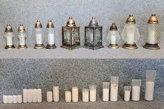

Kapų žvakės

Ši žvakė yra rankų darbo ir suteikia jūsų namams arba kapui ypatingą ir oriai atrodo. Jos kompozicija susideda iš aukso bronzo spalvos statulėlės, vaizduojančios gražią angelų figūrą. Angelas švelniai palaiko abiem rankomis šviesaus aukso spalvos kalnelį.
Ant šio kalnelio yra įkomponuotos dvi baltos žvakės. Baltos spalvos žvakės suteikia nuoširdaus ir ramią atmosferą, prisidedantys prie vizualinės šios žvakės elegancijos. Jos puikiai derasi su bronzine statulėle, kuriant malonią kontrastą.
Žvakės iš aukso bronzo kompozicijos sukuriama ypatinga ir šviesi nuotaika. Jos gali būti puikus dekoratyvinis elementas ne tik kapinių aplinkai, bet ir bet kokiam interjere ar aikštelėje, kurioje norite sukurti ramią ir orią atmosferą.
Ši kapų žvakė su bronzine statulėle ir baltomis žvakėmis tikrai sužadins prisiminimus ir suteiks jums galimybę pagerbti prisiminimus su šiluma ir švelnumu.

Parafinines žvakes iš įvairių dydžių ir skaldyto stiklo yra stilingas ir modernus pasirinkimas, kuris papuoš jūsų interjerą ir suteiks malonią atmosferą jūsų namuose ar specialiose progose. Šios žvakės yra ypatingos savo elegancija ir unikalumu, leidžiančiu pažvelgti į jos liepsnos užsidegimą pro skaidrią stiklą.
Dydis: Skaldytos stiklo parafininių žvakių gali būti įvairių dydžių, pradedant nuo mažų vienkiopio dydžio žvakių, kurios puikiai tinka pasidėti ant stalų ar veidrodžių, iki didelių dekoratyvinių žvakių, kurios tiks kaip akcentai ant grindų ar ant lentynos.
Skaldymo efektas: Skaldytas stiklas suteikia ypatingą žvakių dizainą. Tai galėtų būti subtilus skaldymo efektas, kuris leidžia atsispindėti šviesai ir sukurti žavesingą šviesos žaidimą, arba tai gali būti ryškesnis ir ryškesnis skaldymas, kuris suteikia žvakei modernų ir avangardinį išvaizdą.

Kapų žvakės iš parafino yra ypatingas būdas pagerbti ir pagerinti prisiminimus apie artimuosius, kurie mus paliko. Šios nuostabios žvakės, įvairaus dydžio ir formų, atlieka ypatingą vaidmenį puošiant kapines ir suteikia joms jaukumo.
Parafinu pagamintos žvakės užtikrina ilgalaikį degimą, leisdamos mums ilgai mėgautis jų šiluma ir šviesa. Mažos žvakutės gali būti stilingai suderintos ant kapų ar ant kapinės akmenų, atsiskleisdamos kaip švelnus ir pagarbos kupinas gestas.
Tačiau didesnės ir išskirtinės kapų žvakės, turinčios rafinuotus dizainus ir smulkias detales, tampa išskirtiniu kapo dekoro akcentu. Jos pritraukia dėmesį ir išskirtinai gerbia prisiminimą apie mūsų artimuosius.
Kapų žvakės iš parafino ne tik papuošia kapines, bet ir sukuria orią ir apgalvotą atmosferą, kurioje galime ramiai pagerbti ir atminėti tuos, kuriuos mylime. Šios šviesos liepsna tampa simboliu, jungiančiu praeitį ir dabartį, ir paliekanti mums prisiminimų karalystėje amžiną užuominą apie mūsų artimuosius.